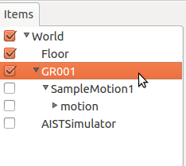
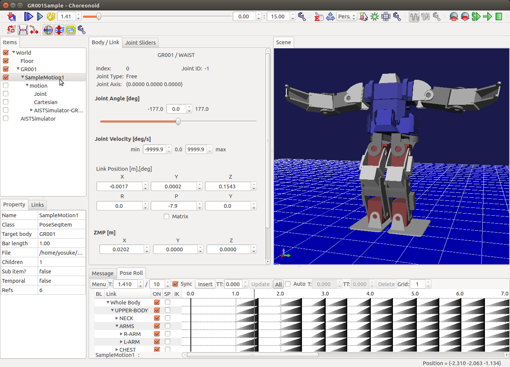

モーションの作成¶
このチュートリアルではChoreonoidを使ってモーション列を編集する方法について学びます。
サンプルプロジェクトのロード¶
メニューから”File” -> “Open Project”を選択し、”share/project”フォルダの下の”GR001Sample.cnoid”を開いてください。
独自のプロジェクト用の設定¶
自分のロボットのためのモーションを編集したい場合、以下の設定を行ってください。
メインメニューでの操作:
Worldアイテムを作成（ “File” -> “New...” -> “World”を選択）。
Modelアイテムのロード（”File” -> “Open...” -> “OpenHRP Model File”を選択）。
PoseSeqアイテムの作成（ “File” -> “New...” -> “PoseSeq”を選択）
モーション編集中に物理シミュレーションも行いたい場合は以下のアイテムも追加します:
floorモデルのロード（”File” -> “Open...” -> “OpenHRP Model File”を選択）
AISTSimulatorアイテムを作成（”File” -> “New...” -> “AISTSimulator”を選択）。
Itemパネルでの操作:
アイテムをドラッグアンドドロップして以下の順番で並べます（modelアイテムとsimulatorアイテムはworldアイテムの下、poseseqアイテムはmodelアイテムの下）。
モーション編集の基本操作¶
Open pose roll view by selecting “View” -> “Show View” -> “Pose Roll” menu item.
PoseSeqアイテムをクリックして選択しチェックボックスをオンにします。
Click “Play Animation” button to play the motion.
Pose rollパネルの”Insert”ボタンをクリックして、新しいキーフレームを挿入します。
